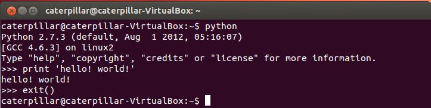

在這個時間點學 Python 表面上有些尷尬，因為必須面臨學習 Python 2.x 或是 Python 3.x 的問題。Python 3.0（也就是 Python 3000，或是 Py3k）在 2008 年 12 月 3 日釋出，它拋棄了與 Python 2.x 的向後相容，但也在語法上改進了許多問題，我沒有很仔細地去比較 Python 2.6、2.7 這兩個版本，不過據稱這兩個版本在某些目的上，是為了讓 Python 可以平順地從 2.x 過渡到 3.x，像是在 Python 2.7 中，就新增了不少 Python 3.1 中的特性，據稱 Python 2.7 應該是 2.x 系列最後一個版本，2.7.x 都在於修正臭蟲之類的，在撰寫本文件時，最新的 2.7.x 是 Python 2.7.5，於 2013 年 5 月 15 日釋出，而最新的 3.x 則為 Python 3.3.1，於 2013 年 4 月 7 日釋出。
由於 Python 3.x 不考慮與 Python 2.x 系列的向後相容，許多程式庫沒法一時之間昇級到能支援 Python 3.x，因此若以實用為主，學習 Python 2.7 是目前比較建議的；支援 Python 3.x 的程式庫，目前在日漸增加之中，然而單就學習 Python 而言，個人感覺是有了 Python 2.7 的基礎，日後有想要再學習 Python 3.x 並不是難事。
Python 的實作
能執行 Python 語言的實作品有不少，接下來介紹幾個主要的實作 ...CPython 是 Python 的參考實作，一般如果提到安裝 Python，沒有特別聲明的話，指的就是安裝 CPython，顧名思義以 C 撰寫，提供與 Python 套件（Package）與 C 擴充模組的最高相容性。Python 是直譯式語言，不過並非每次都從原始碼直譯後執行，CPython 會將原始碼編譯為中介位元碼（bytecode，也就是 .py 原始碼檔案被 CPython 執行過留下的 .pyc 檔案），爾後再由虛擬機器執行，這點與 Java 有點類似，之後再次執行時，就不用從原始碼而可以從位元碼開始直譯，以加快直譯速度。
PyPy名稱上來看，是用 Python 實現的 Python，正確地說，是使用 rPython 來實現 Python，rPython 不是完整的 Python，是 Python 的子集，不過 PyPy 可以執行完整的 Python 語言。PyPy 包括一個 JIT（Just-in-Time）編譯器（與 Java 的 HotSpot 技術類似），PyPy 可以將 Python 程式碼編譯為其他語言，像是 C（以及其他語言，例如 CIL、JavaScript），運行速度可比 CPython 要快，為了能進行語言轉換，你必須使用 rPython。PyPy 目的在改進 Python 的效能，同時追求與 CPython 的最大相容性（這意味著使用 PyPy 還是有相容性上的限制）。
Jython 是用 Java 實現的 Python，可以讓 Python 程式運行於 JVM 上，它會將 Python 程式碼轉譯為 Java 的位元碼（bytecode），既然可以運行在 JVM 上，自然就能匯入（import）取用 Java 的類別，因而利用 Java 領域中龐大的程式庫與各式資源，
IronPython 是可與 .NET 平台結合的 Python 開放原始碼實現，可以使用 .NET Framework 程式庫，讓 .NET 其他語言也易於使用 Python 程式庫。IronPython 的創建者 Jim Hugunin 同時也是 Jython 創建者。
準備課程環境
這門課程的作業系統，使用的是 Ubuntu 12.04 LTS，使用這個作業系統的原因是，希望這門課程可以有一個一致的環境，而這個環境不會因為作業系統版本更迭而造成一些初學者的困惑，你可以在一台全新的機器中，或者是在虛擬機器中標準安裝，接下來就可以進行後續的課程了。課程的相關範例原始碼都放在 Github 上，因此你要在 Ubuntu 中安裝 Git 客戶端，首先開啟終端機：
{kind=link}
之後，執行以下指令安裝 git：
$ sudo apt-get update
$ sudo apt-get install git安裝完成後，可以使用以下指令下載課程資料：
$ git clone https://github.com/JustinSDK/PyConTW2013Tutorial.git在編輯 Python 程式碼時，可以使用任何你慣用的編輯器，為了課程進行時的流暢，本課程環境使用 Sublime Text 2，這個版本可以免費用於評估，偶而會出現提示訊息詢問是否購買授權，撰寫這篇文章時的 Sublime Text 2 版本是 2.0.2，你可以使用以下指令下載、解壓縮、移動目錄與設定執行檔連結，之後就可以使用
st2 指令來開啟 Sublime Text 2：
$ wget http://c758482.r82.cf2.rackcdn.com/Sublime%20Text%202.0.2.tar.bz2
$ tar -xf "Sublime Text 2.0.2.tar.bz2"
$ sudo mv "Sublime Text 2" /usr/lib
$ sudo ln -s "/usr/lib/Sublime Text 2/sublime_text" /usr/bin/st2練習 0：使用 Python 互動交談環境
這個課程選擇的 Python 實作是 Python 2.7.3，因為這是 Ubuntu 12.04 LTS 內建的 Python 實作，你只要在終端機中鍵入python，就會進入互動式交談環境，先在裏頭輸入 print 'hello! world!' 後按 Enter 來個哈囉世界，要離開互動交談環境，可以輸入 exit() 後按 Enter 或按 Ctrl + D，這是本課程的第 0 個練習（因為沒什麼困難度 XD）：
{kind=link}
練習 1：安裝 Setuptools、Pip 與 Virtualenv
在 Python 標準程式庫中有個distutils，是用來建立與安裝額外模組，適用於簡易的安裝場合，有些程式庫擴充了 distutils，像是 Setuptools，可以使用以下的指令建立、進入 scripts 資料夾，然後下載、安裝 Setuptools：
$ mkdir scripts
$ cd scripts
$ wget https://bootstrap.pypa.io/ez_setup.py -O - | sudo pythoneasy_install 指令可以使用，這個指令有一些問題，因而許多人建議廢棄它不要使用了，課程中會安裝它的替代品 pip：
$ sudo easy_install pipPS. Python 3.4 之後預設就有
pip 可以使用了。在安裝 Python 擴充模組時，會需要將某些資料複製至 Python 相關資料夾，也需要一些環境變數等的設定，不同的應用程式可能會需要不同的程式庫版本或相關環境設定，為了方便，可以安裝 virtualenv，它可以讓你很簡易地建立起獨立的 Python 虛擬環境，讓不同的 Python 環境之間彼此互不干擾，這邊使用剛剛安裝好的
pip 來安裝 virtualenv：
$ sudo pip install virtualenvvirtualenv。到這邊為止，課程環境大致準備好了，安裝過程的畫面，可以參考 Python 2 Tutorial 第一堂（1）揭開序幕 中的投影片，這邊就不再重複抓圖了。 那麼，剛剛安裝的東西到底跑哪去了？
distutils、Distribute、Pip 之間的關係是怎樣？要怎麼使用 Virtualenv 建立虛擬環境？就請期待下回了 ...